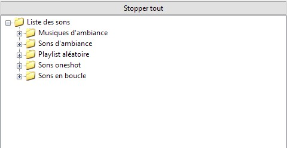
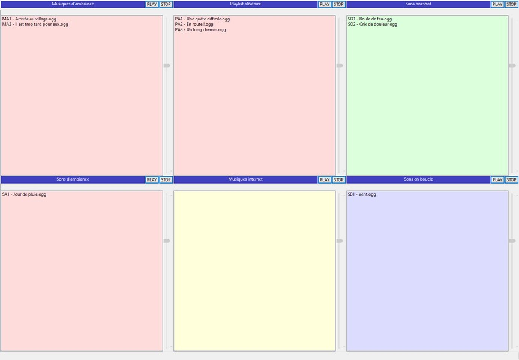

Voici comment est construite l'interface de RPG Deejay :
Le volet gauche :

Dans le volet gauche apparaissent les dossiers et fichiers de sons
que l'on a ouverts avec le menu Fichier.
On peut double-cliquer sur un son pour écouter ce qu'il contient.
Et le bouton Stopper Tout permet de stopper toute sonorité en cours de jeu.
La touche Echap stoppera aussi tout son joué.
Le volet droit :

Une fois vos sons chargés dans le volet gauche, faite glisser les sons un par un à la souris (ou
des sous-dossiers entier de sons) dans les listes qui vous conviennent.
Voici le nom des six listes et leur usage :
Musiques d'ambiance : cette playlist jouera une musique ou une boucle de musique répétitivement,
jusqu'à ce que vous ayez arrêté le son. Vous pouvez le faire en appuyant sur le bouton stop correspondant.
Cette piste fait partie des trois pistes d'ambiance. (couleur rose) Vous pouvez passer de l'une à l'autre
en sélectionnant un des fichiers audio sur une des pistes et en appuyant sur Play, ou double cliquer dessus.
Sons d'ambiance : identique à musique d'ambiance, sauf qu'elle est prévue pour y caser des bruitages
d'ambiance, comme des sons représentant la météo.
Playlist aléatoire : chaque fois qu'une musique se termine sur cette liste, une autre musique jouera
choisie au hasard dans cette même liste. Cela vous permettra de mettre plusieurs musiques d'ambiance sans
avoir à gérer le logiciel pendant un moment.
Sons oneshot : cette liste est prévue pour accueillir des bruitages qui ne seront joués qu'une fois.
Placez-y des effets spéciaux, comme vos bruitages de sortilèges et autres explosions.
Sons en boucle : liste prévue pour être jouée en boucle, mais en parallèle par rapport à la piste
de musiques d'ambiance.
Musiques internet : jouez des musiques sur internet grace à leur URL, saisies au préalable. Attention,
vous n'aurez pas le même contrôle sur les pistes internet qu'avec les autres playlists..
Volumes : Notez que pour créer et sauvegarder votre sélection musicale, vous pouvez changer les volumes
de chaque piste audio. Pour cela, jouez un bruitage ou un son, ce qui activera son curseur de volume.
Une fois tous vos sons ajustés les uns par rapport aux autres, n'oubliez pas de sauvegarder votre playlist
grace au menu Fichier.
Retour à l'index...